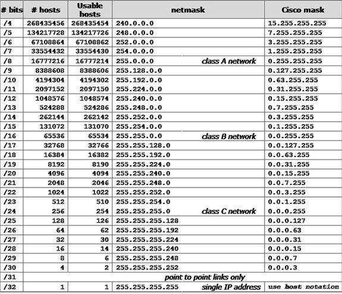

Apa itu subnet mask?
- Subnet mask adalah sebuah metode yang digunakan untuk menambah jaringan. Metode penambahan jaringan
ini dilakukan dengan cara memecah IP Address menjadi ukuran yang lebih kecil (subnetwork).
- Pemecahan atau pembagian jaringan hanya dapat diterapkan pada IP address kelas A, B, dan C. Praktik
pemecahan ini juga dikenal dengan istilah "subnetting".
- Dengan kata lain, fungsi subnet mask adalah untuk memunculkan beberapa tambahan jaringan dengan cara
memecahnya. Perlu diingat bahwa teknik ini memerlukan kalkulasi yang cermat karena berdampak pada
pengurangan jumlah maksimum host network.

Back